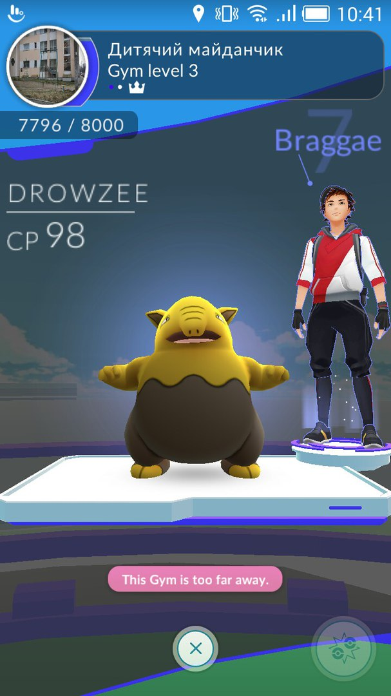
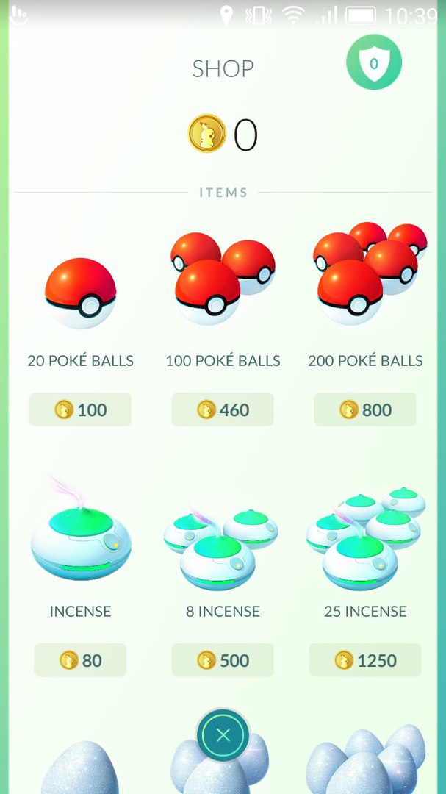

PvP в Pokémon GO?
 Після досягнення п'ятого рівня кожен тренер повинен вибрати одну з трьох команд ( червону , жовту або синю ) , за перевагу якої над іншими він буде боротися , змінити сторону не можна . Захищаючи честь своєї команди і переслідуючи власну вигоду , гравці постійно борються за контроль над стадіоном ( Gym ) , які зустрічаються розкидані по карті .У Pokemon Go кожен стадіон може контролювати одна команда , члени якої поміщають туди своїх монстрів , щоб ті захищали цінну точку від нападок конкурентів .
 Господарі захищають стадіон покемонів отримують золоті монетки за кожну добу , які вони утримують контроль . На монетки можна купувати різні корисні предмети на зразок приманок і інкубаторів для яєць .
Залишивши покемона на стадіоні , ви не зможете забрати його назад до тих пір , поки ворожа команда не захопить його , вигнавши звідти всіх повалених захисників . Щоб відвоювати Gym - стадіон , гравець іншої команди повинен зібрати команду ( максимум шість покемонів ) і битися з усіма покемонами захисниками по черзі без перерви .
У битві ви можете застосовувати кілька прийомів . Швидкий тап по противнику викликає швидку атаку . Довгий тап дозволяє застосувати суперудар . Свайп вліво або вправо дозволяє ухилятися від атак .